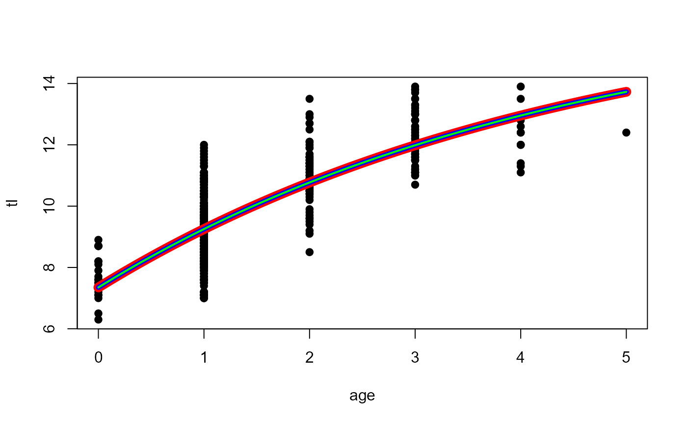

Creates a function for a specific parameterization of the von Bertalanffy, Gompertz, Richards, and logistic growth functions.
Source:R/growthModels.R
growthModels.RdCreates a function for a specific parameterizations of the von Bertalanffy, Gompertz, Richards, and logistic growth functions. Use growthFunShow() to see the equations for each growth function.
vbFuns(param = c("Typical", "typical", "Traditional", "traditional", "BevertonHolt", "Original", "original", "vonBertalanffy", "GQ", "GallucciQuinn", "Mooij", "Weisberg", "Ogle", "Schnute", "Francis", "Laslett", "Polacheck", "Somers", "Somers2", "Pauly", "Fabens", "Fabens2", "Wang", "Wang2", "Wang3", "Francis2", "Francis3"), simple = FALSE, msg = FALSE) GompertzFuns(param = c("Ricker1", "Ricker2", "Ricker3", "QuinnDeriso1", "QuinnDeriso2", "QuinnDeriso3", "QD1", "QD2", "QD3", "Original", "original", "Troynikov1", "Troynikov2"), simple = FALSE, msg = FALSE) RichardsFuns(param = 1, simple = FALSE, msg = FALSE) logisticFuns(param = c("CJ1", "CJ2", "Karkach", "Haddon", "CampanaJones1", "CampanaJones2"), simple = FALSE, msg = FALSE) growthFunShow(type = c("vonBertalanffy", "Gompertz", "Richards", "Logistic", "Schnute", "SchnuteRichards"), param = NULL, case = param, plot = FALSE, ...)
Arguments
| param | A string (for von Bertalanffy, Gompertz, and logistic) or numeric (for Richards) that indicates the specific parameterization of the growth function. See details. |
|---|---|
| simple | A logical that indicates whether the function will accept all parameter values in the first parameter argument ( |
| msg | A logical that indicates whether a message about the growth function and parameter definitions should be output ( |
| type | A string (in |
| case | A numeric that indicates the specific case of the Schnute function to use. See details. |
| plot | A logical that indicates whether the growth function expression should be shown as an equation in a simple plot. |
| … | Not implemented. |
Value
The functions ending in xxxFuns return a function that can be used to predict fish size given a vector of ages and values for the growth function parameters and, in some parameterizations, values for constants. The result should be saved to an object that is then the function name. When the resulting function is used, the parameters are ordered as shown when the definitions of the parameters are printed after the function is called (if msg=TRUE). If simple=FALSE (DEFAULT), then the values for all parameters may be included as a vector in the first parameter argument (but in the same order). Similarly, the values for all constants may be included as a vector in the first constant argument (i.e., t1). If simple=TRUE, then all parameters and constants must be declared individually. The resulting function is somewhat easier to read when simple=TRUE, but is less general for some applications.
An expression of the equation for each growth function may be created with growthFunShow. In this function type= is used to select the major function type (e.g., von Bertalanffy, Gompertz, Richards, Logistic, Schnute) and param= is used to select a specific parameterization of that growth function. If plot=TRUE, then a simple graphic will be created with the equation using plotmath for a pretty format.
Note
Take note of the following for parameterizations (i.e., param) of each growth function:
von Bertalanffy
The ‘Original’ and ‘vonBertalanffy’ are synonymous as are ‘Typical’, ‘Traditional’, and ‘BevertonHolt’. Further note that the ‘Ogle’ parameterization has the ‘Original’/‘vonBertalanffy’ and ‘Typical’/‘Traditional’/‘BevertonHolt’ parameterizations as special cases.
Gompertz
The ‘Ricker2’ and ‘QuinnDeriso1’ are synonymous, as are ‘Ricker3’ and ‘QuinnDeriso2’.
The parameterizations and parameters for the Gompertz function are varied and confusing in the literature. I have attempted to use a uniform set of parameters in these functions, but that makes a direct comparison to the literature difficult. Common sources for Gompertz models are listed in the references below. I make some comments here to aid comparisons to the literature.
Within FSA, L0 is the mean length at age 0, Linf is the mean asymptotic length, ti is the age at the inflection point, gi is the instantaneous growth rate at the inflection point, t* is a dimensionless parameter related to time/age, and a is a dimensionless parameter related to growth.
In the Quinn and Deriso (1999) functions (the ‘QuinnDerisoX’ functions), the a parameter here is equal to lambda/K there and the gi parameter here is equal to the K parameter there. Also note that their Y is L here.
In the Ricker (1979)[p. 705] functions (the ‘RickerX’ functions), the a parameter here is equal to k there and the gi parameter here is equal to the g parameter there. Also note that their w is L here. In the Ricker (1979) functions as presented in Campana and Jones (1992), the a parameter here is equal to k parameter there and the gi parameter here is equal to the G parameter there. Also note that their X is L here.
The function in Ricker (1975)[p. 232] is the same as ‘Ricker2’ where the a parameter here is qual to G there and the gi parameter here is equal to the g parameter there. Also note that their w is L here.
The function in Quist et al. (2012)[p. 714] is the same as ‘Ricker1’ where the gi parameter here is equal to the G parameter there and the ti parameter here is equal to the t0 parameter there.
The function in Katsanevakis and Maravelias (2008) is the same as ‘Ricker1’ where the gi parameter here is equal to k2 parameter there and the ti parameter here is equal to the t2 parameter there.
Richards
Within FSA, Linf is the mean asymptotic length, ti is the age at the inflection point, k is related to growth (slope at the inflection point), b is related to the vertical position of the inflection point, and L0 is the mean length at age-0.
The parameterizations (1-6) correspond to functions/equations 1, 4, 5, 6, 7, and 8, respectively, in Tjorve and Tjorve (2010). Note that their A, S, k, d, and B are Linf, a, k, b, and L0, respectively, here (in FSA).
logistic
Within FSA, L0 is the mean length at age 0, Linf is the mean asymptotic length, ti is the age at the inflection point, and gninf is the instantaneous growth rate at negative infinity.
IFAR Chapter
12-Individual Growth.
References
Ogle, D.H. 2016. Introductory Fisheries Analyses with R. Chapman & Hall/CRC, Boca Raton, FL.
Campana, S.E. and C.M. Jones. 1992. Analysis of otolith microstructure data. Pages 73-100 In D.K. Stevenson and S.E. Campana, editors. Otolith microstructure examination and analysis. Canadian Special Publication of Fisheries and Aquatic Sciences 117. [Was (is?) from http://www.dfo-mpo.gc.ca/Library/141734.pdf.]
Fabens, A. 1965. Properties and fitting of the von Bertalanffy growth curve. Growth 29:265-289.
Francis, R.I.C.C. 1988. Are growth parameters estimated from tagging and age-length data comparable? Canadian Journal of Fisheries and Aquatic Sciences, 45:936-942.
Gallucci, V.F. and T.J. Quinn II. 1979. Reparameterizing, fitting, and testing a simple growth model. Transactions of the American Fisheries Society, 108:14-25.
Garcia-Berthou, E., G. Carmona-Catot, R. Merciai, and D.H. Ogle. A technical note on seasonal growth models. Reviews in Fish Biology and Fisheries 22:635-640. [Was (is?) from https://www.researchgate.net/publication/257658359_A_technical_note_on_seasonal_growth_models.]
Gompertz, B. 1825. On the nature of the function expressive of the law of human mortality, and on a new method of determining the value of life contingencies. Philosophical Transactions of the Royal Society of London. 115:513-583.
Haddon, M., C. Mundy, and D. Tarbath. 2008. Using an inverse-logistic model to describe growth increments of Blacklip Abalone (Haliotis rubra) in Tasmania. Fishery Bulletin 106:58-71. [Was (is?) from http://aquaticcommons.org/8857/1/haddon_Fish_Bull_2008.pdf.]
Karkach, A. S. 2006. Trajectories and models of individual growth. Demographic Research 15:347-400. [Was (is?) from http://www.demographic-research.org/volumes/vol15/12/15-12.pdf.]
Katsanevakis, S. and C.D. Maravelias. 2008. Modeling fish growth: multi-model inference as a better alternative to a priori using von Bertalanffy equation. Fish and Fisheries 9:178-187.
Mooij, W.M., J.M. Van Rooij, and S. Wijnhoven. 1999. Analysis and comparison of fish growth from small samples of length-at-age data: Detection of sexual dimorphism in Eurasian Perch as an example. Transactions of the American Fisheries Society 128:483-490.
Polacheck, T., J.P. Eveson, and G.M. Laslett. 2004. Increase in growth rates of southern Bluefin Tuna (Thunnus maccoyii) over four decades: 1960 to 2000. Canadian Journal of Fisheries and Aquatic Sciences, 61:307-322.
Quinn, T. J. and R. B. Deriso. 1999. Quantitative Fish Dynamics. Oxford University Press, New York, New York. 542 pages.
Quist, M.C., M.A. Pegg, and D.R. DeVries. 2012. Age and Growth. Chapter 15 in A.V. Zale, D.L Parrish, and T.M. Sutton, Editors Fisheries Techniques, Third Edition. American Fisheries Society, Bethesda, MD.
Richards, F. J. 1959. A flexible growth function for empirical use. Journal of Experimental Biology 10:290-300.
Ricker, W.E. 1975. Computation and interpretation of biological statistics of fish populations. Technical Report Bulletin 191, Bulletin of the Fisheries Research Board of Canada. [Was (is?) from http://www.dfo-mpo.gc.ca/Library/1485.pdf.]
Ricker, W.E. 1979. Growth rates and models. Pages 677-743 In W.S. Hoar, D.J. Randall, and J.R. Brett, editors. Fish Physiology, Vol. 8: Bioenergetics and Growth. Academic Press, NY, NY. [Was (is?) from https://books.google.com/books?id=CB1qu2VbKwQC&pg=PA705&lpg=PA705&dq=Gompertz+fish&source=bl&ots=y34lhFP4IU&sig=EM_DGEQMPGIn_DlgTcGIi_wbItE&hl=en&sa=X&ei=QmM4VZK6EpDAgwTt24CABw&ved=0CE8Q6AEwBw#v=onepage&q=Gompertz%20fish&f=false.]
Schnute, J. 1981. A versatile growth model with statistically stable parameters. Canadian Journal of Fisheries and Aquatic Sciences, 38:1128-1140.
Somers, I. F. 1988. On a seasonally oscillating growth function. Fishbyte 6(1):8-11. [Was (is?) from http://www.worldfishcenter.org/Naga/na_2914.pdf.]
Tjorve, E. and K. M. C. Tjorve. 2010. A unified approach to the Richards-model family for use in growth analyses: Why we need only two model forms. Journal of Theoretical Biology 267:417-425. [Was (is?) from https://www.researchgate.net/profile/Even_Tjorve/publication/46218377_A_unified_approach_to_the_Richards-model_family_for_use_in_growth_analyses_why_we_need_only_two_model_forms/links/54ba83b80cf29e0cb04bd24e.pdf.]
Troynikov, V. S., R. W. Day, and A. M. Leorke. Estimation of seasonal growth parameters using a stochastic Gompertz model for tagging data. Journal of Shellfish Research 17:833-838. [Was (is?) from https://www.researchgate.net/profile/Robert_Day2/publication/249340562_Estimation_of_seasonal_growth_parameters_using_a_stochastic_gompertz_model_for_tagging_data/links/54200fa30cf203f155c2a08a.pdf.]
Vaughan, D. S. and T. E. Helser. 1990. Status of the Red Drum stock of the Atlantic coast: Stock assessment report for 1989. NOAA Technical Memorandum NMFS-SEFC-263, 117 p. [Was (is?) from http://docs.lib.noaa.gov/noaa_documents/NMFS/SEFSC/TM_NMFS_SEFSC/NMFS_SEFSC_TM_263.pdf.]
Wang, Y.-G. 1998. An improved Fabens method for estimation of growth parameters in the von Bertalanffy model with individual asymptotes. Canadian Journal of Fisheries and Aquatic Sciences 55:397-400.
Weisberg, S., G.R. Spangler, and L. S. Richmond. 2010. Mixed effects models for fish growth. Canadian Journal of Fisheries And Aquatic Sciences 67:269-277.
Winsor, C.P. 1932. The Gompertz curve as a growth curve. Proceedings of the National Academy of Sciences. 18:1-8. [Was (is?) from http://www.ncbi.nlm.nih.gov/pmc/articles/PMC1076153/pdf/pnas01729-0009.pdf.]
See also
See Schnute for an implementation of the Schnute (1981) model.
Examples
########################################################### ## Simple Examples -- Von B ( vb1 <- vbFuns() )#> function(t,Linf,K=NULL,t0=NULL) { #> if (length(Linf)==3) { K <- Linf[[2]] #> t0 <- Linf[[3]] #> Linf <- Linf[[1]] } #> Linf*(1-exp(-K*(t-t0))) #> } #> <environment: 0x000000001e70f5c0>( vb2 <- vbFuns("Francis") )#> function(t,L1,L2=NULL,L3=NULL,t1,t3=NULL) { #> if (length(L1)==3) { L2 <- L1[[2]]; L3 <- L1[[3]]; L1 <- L1[[1]] } #> if (length(t1)==2) { t3 <- t1[[2]]; t1 <- t1[[1]] } #> r <- (L3-L2)/(L2-L1) #> L1+(L3-L1)*((1-r^(2*((t-t1)/(t3-t1))))/(1-r^2)) #> } #> <bytecode: 0x000000002132b378> #> <environment: 0x000000001999b610>( vb2c <- vbFuns("Francis",simple=TRUE) ) # compare to vb2#> function(t,L1,L2,L3,t1,t3) { #> r <- (L3-L2)/(L2-L1) #> L1+(L3-L1)*((1-r^(2*((t-t1)/(t3-t1))))/(1-r^2)) #> } #> <bytecode: 0x000000001a45c090> #> <environment: 0x000000001612b7f8>## Simple Examples -- Gompertz ( gomp1 <- GompertzFuns() )#> function(t,Linf,gi=NULL,ti=NULL) { #> if (length(Linf)==3) { gi <- Linf[[2]] #> ti <- Linf[[3]] #> Linf <- Linf[[1]] } #> Linf*exp(-exp(-gi*(t-ti))) #> } #> <environment: 0x000000001605fee0>( gomp2 <- GompertzFuns("Ricker2") )#> function(t,L0,a=NULL,gi=NULL) { #> if (length(L0)==3) { a <- L0[[2]] #> gi <- L0[[3]] #> L0 <- L0[[1]] } #> L0*exp(a*(1-exp(-gi*t))) #> } #> <bytecode: 0x0000000014a692f0> #> <environment: 0x0000000015f2ec68>( gomp2c <- GompertzFuns("Ricker2",simple=TRUE) ) # compare to gomp2#> function(t,L0,a,gi) { #> L0*exp(a*(1-exp(-gi*t))) #> } #> <bytecode: 0x00000000145b5318> #> <environment: 0x0000000018d95178>( gompT <- GompertzFuns("Troynikov1"))#> function(Lm,dt,Linf,gi=NULL) { #> if (length(Linf)==2) { gi <- Linf[2] #> Linf <- Linf[1] } #> Linf*((Lm/Linf)^exp(-gi*dt))-Lm #> } #> <bytecode: 0x000000001904b390> #> <environment: 0x0000000019765520>## Simple Examples -- Richards ( rich1 <- RichardsFuns() )#> function(t,Linf,k=NULL,a=NULL,b=NULL) { #> if (length(Linf)==4) { k <- Linf[[2]] #> a <- Linf[[3]] #> b <- Linf[[4]] #> Linf <- Linf[[1]] } #> Linf*(1-a*exp(-k*t))^b #> } #> <environment: 0x000000001f5eb2d8>( rich2 <- RichardsFuns(2) )#> function(t,Linf,k=NULL,ti=NULL,b=NULL) { #> if (length(Linf)==4) { k <- Linf[[2]] #> ti <- Linf[[3]] #> b <- Linf[[4]] #> Linf <- Linf[[1]] } #> Linf*(1-(1/b)*exp(-k*(t-ti)))^b #> } #> <bytecode: 0x0000000018800c20> #> <environment: 0x000000001f52e080>( rich3 <- RichardsFuns(3) )#> function(t,Linf,k=NULL,ti=NULL,b=NULL) { #> if (length(Linf)==4) { k <- Linf[[2]] #> ti <- Linf[[3]] #> b <- Linf[[4]] #> Linf <- Linf[[1]] } #> Linf/((1+b*exp(-k*(t-ti)))^(1/b)) #> } #> <bytecode: 0x0000000015bad070> #> <environment: 0x000000001e870b68>( rich4 <- RichardsFuns(4) )#> function(t,Linf,k=NULL,ti=NULL,b=NULL) { #> if (length(Linf)==4) { k <- Linf[[2]] #> ti <- Linf[[3]] #> b <- Linf[[4]] #> Linf <- Linf[[1]] } #> Linf*(1+(b-1)*exp(-k*(t-ti)))^(1/(1-b)) #> } #> <bytecode: 0x00000000151885c8> #> <environment: 0x00000000186648c0>( rich5 <- RichardsFuns(5) )#> function(t,Linf,k=NULL,L0=NULL,b=NULL) { #> if (length(Linf)==4) { k <- Linf[[2]] #> L0 <- Linf[[3]] #> b <- Linf[[4]] #> Linf <- Linf[[1]] } #> Linf*(1+(((L0/Linf)^(1-b))-1)*exp(-k*t))^(1/(1-b)) #> } #> <bytecode: 0x0000000009a96148> #> <environment: 0x000000001f886090>( rich6 <- RichardsFuns(6) )#> function(t,Linf,k=NULL,ti=NULL,Lninf=NULL,b=NULL) { #> if (length(Linf)==5) { k <- Linf[[2]] #> ti <- Linf[[3]] #> Lninf <- Linf[[3]] #> b <- Linf[[4]] #> Linf <- Linf[[1]] } #> Lninf+(Linf-Lninf)*(1+(b-1)*exp(-k*(t-ti)))^(1/(1-b)) #> } #> <bytecode: 0x0000000019cb9140> #> <environment: 0x000000001f127ee0>( rich2c <- RichardsFuns(2,simple=TRUE) ) # compare to rich2#> function(t,Linf,k,ti,b) { #> Linf*(1-(1/b)*exp(-k*(t-ti)))^b #> } #> <bytecode: 0x00000000160970e0> #> <environment: 0x000000001eb92e98>## Simple Examples -- Logistic ( log1 <- logisticFuns() )#> function(t,Linf,gninf=NULL,ti=NULL) { #> if (length(Linf)==3) { gninf <- Linf[[2]] #> ti <- Linf[[3]] #> Linf <- Linf[[1]] } #> Linf/(1+exp(-gninf*(t-ti))) #> } #> <environment: 0x000000001ea20f00>( log2 <- logisticFuns("CJ2") )#> function(t,Linf,gninf=NULL,a=NULL) { #> if (length(Linf)==3) { gninf <- Linf[[2]] #> a <- Linf[[3]] #> Linf <- Linf[[1]] } #> Linf/(1+a*exp(-gninf*t)) #> } #> <bytecode: 0x00000000181ad2f8> #> <environment: 0x000000001a6c34e0>( log2c <- logisticFuns("CJ2",simple=TRUE) ) # compare to log2#> function(t,Linf,gninf,a) { #> Linf/(1+a*exp(-gninf*t)) #> } #> <bytecode: 0x000000001600aaa0> #> <environment: 0x000000001484f428>( log3 <- logisticFuns("Karkach") )#> function(t,Linf,L0=NULL,gninf=NULL) { #> if (length(Linf)==3) { L0 <- Linf[[2]] #> gninf <- Linf[[3]] #> Linf <- Linf[[1]] } #> L0*Linf/(L0+(Linf-L0)*exp(-gninf*t)) #> } #> <bytecode: 0x0000000015bf75c0> #> <environment: 0x00000000146fad48>( log4 <- logisticFuns("Haddon") )#> function(Lm,dLmax,L50=NULL,L95=NULL) { #> if (length(dLmax)==3) { L50 <- dLmax[2] #> L95 <- dLmax[3] #> dLmax <- dLmax[1] } #> dLmax/(1+exp(log(19)*((Lm-L50)/(L95-L50)))) #> } #> <bytecode: 0x0000000015308e68> #> <environment: 0x00000000144e0ec0>########################################################### ## Examples of fitting ## After the last example a plot is constructed with three ## or four lines on top of each other illustrating that the ## parameterizations all produce the same fitted values. ## However, observe the correlations in the summary() results. ## Von B plot(tl~age,data=SpotVA1,pch=19)# Fitting the typical parameterization of the von B function fit1 <- nls(tl~vb1(age,Linf,K,t0),data=SpotVA1, start=vbStarts(tl~age,data=SpotVA1)) summary(fit1,correlation=TRUE)#> #> Formula: tl ~ vb1(age, Linf, K, t0) #> #> Parameters: #> Estimate Std. Error t value Pr(>|t|) #> Linf 16.79818 1.93455 8.683 < 2e-16 *** #> K 0.22493 0.06922 3.250 0.00125 ** #> t0 -2.55738 0.47496 -5.384 1.24e-07 *** #> --- #> Signif. codes: 0 '***' 0.001 '**' 0.01 '*' 0.05 '.' 0.1 ' ' 1 #> #> Residual standard error: 1.053 on 400 degrees of freedom #> #> Correlation of Parameter Estimates: #> Linf K #> K -0.99 #> t0 -0.94 0.98 #> #> Number of iterations to convergence: 10 #> Achieved convergence tolerance: 5.49e-06 #># Fitting the Francis parameterization of the von B function fit2 <- nls(tl~vb2c(age,L1,L2,L3,t1=0,t3=5),data=SpotVA1, start=vbStarts(tl~age,data=SpotVA1,type="Francis",ages2use=c(0,5))) summary(fit2,correlation=TRUE)#> #> Formula: tl ~ vb2c(age, L1, L2, L3, t1 = 0, t3 = 5) #> #> Parameters: #> Estimate Std. Error t value Pr(>|t|) #> L1 7.34803 0.18749 39.19 <2e-16 *** #> L2 11.41275 0.08344 136.78 <2e-16 *** #> L3 13.72912 0.32219 42.61 <2e-16 *** #> --- #> Signif. codes: 0 '***' 0.001 '**' 0.01 '*' 0.05 '.' 0.1 ' ' 1 #> #> Residual standard error: 1.053 on 400 degrees of freedom #> #> Correlation of Parameter Estimates: #> L1 L2 #> L2 -0.43 #> L3 0.48 0.20 #> #> Number of iterations to convergence: 7 #> Achieved convergence tolerance: 9.455e-06 #>curve(vb2c(x,L1=coef(fit2)[1],L2=coef(fit2)[2],L3=coef(fit2)[3],t1=0,t3=5), from=0,to=5,col="blue",lwd=5,add=TRUE)# Fitting the Schnute parameterization of the von B function vb3 <- vbFuns("Schnute") fit3 <- nls(tl~vb3(age,L1,L3,K,t1=0,t3=4),data=SpotVA1, start=vbStarts(tl~age,data=SpotVA1,type="Schnute",ages2use=c(0,4))) summary(fit3,correlation=TRUE)#> #> Formula: tl ~ vb3(age, L1, L3, K, t1 = 0, t3 = 4) #> #> Parameters: #> Estimate Std. Error t value Pr(>|t|) #> L1 7.34803 0.18749 39.19 < 2e-16 *** #> L3 12.95500 0.18740 69.13 < 2e-16 *** #> K 0.22494 0.06922 3.25 0.00125 ** #> --- #> Signif. codes: 0 '***' 0.001 '**' 0.01 '*' 0.05 '.' 0.1 ' ' 1 #> #> Residual standard error: 1.053 on 400 degrees of freedom #> #> Correlation of Parameter Estimates: #> L1 L3 #> L3 0.30 #> K -0.80 -0.71 #> #> Number of iterations to convergence: 8 #> Achieved convergence tolerance: 8.156e-06 #>## Gompertz # Make some fake data using the original parameterization gompO <- GompertzFuns("original") # setup ages, sample sizes (general reduction in numbers with # increasing age), and additive SD to model t <- 1:15 n <- c(10,40,35,25,12,10,10,8,6,5,3,3,3,2,2) sd <- 15 # expand ages ages <- rep(t,n) # get lengths from gompertz and a random error for individuals lens <- gompO(ages,Linf=450,a=1,gi=0.3)+rnorm(length(ages),0,sd) # put together as a data.frame df <- data.frame(age=ages,len=round(lens,0)) plot(len~age,data=df,pch=19,col=rgb(0,0,0,1/5))# Fit first Ricker parameterization fit1 <- nls(len~gomp1(age,Linf,gi,ti),data=df,start=list(Linf=500,gi=0.3,ti=3)) summary(fit1,correlation=TRUE)#> #> Formula: len ~ gomp1(age, Linf, gi, ti) #> #> Parameters: #> Estimate Std. Error t value Pr(>|t|) #> Linf 4.563e+02 6.231e+00 73.23 <2e-16 *** #> gi 2.998e-01 9.123e-03 32.86 <2e-16 *** #> ti 3.423e+00 6.060e-02 56.49 <2e-16 *** #> --- #> Signif. codes: 0 '***' 0.001 '**' 0.01 '*' 0.05 '.' 0.1 ' ' 1 #> #> Residual standard error: 15.65 on 171 degrees of freedom #> #> Correlation of Parameter Estimates: #> Linf gi #> gi -0.84 #> ti 0.88 -0.73 #> #> Number of iterations to convergence: 3 #> Achieved convergence tolerance: 5.463e-07 #># Fit third Ricker parameterization fit2 <- nls(len~gomp2(age,L0,a,gi),data=df,start=list(L0=30,a=3,gi=0.3)) summary(fit2,correlation=TRUE)#> #> Formula: len ~ gomp2(age, L0, a, gi) #> #> Parameters: #> Estimate Std. Error t value Pr(>|t|) #> L0 28.011977 1.912871 14.64 <2e-16 *** #> a 2.790547 0.060744 45.94 <2e-16 *** #> gi 0.299777 0.009123 32.86 <2e-16 *** #> --- #> Signif. codes: 0 '***' 0.001 '**' 0.01 '*' 0.05 '.' 0.1 ' ' 1 #> #> Residual standard error: 15.65 on 171 degrees of freedom #> #> Correlation of Parameter Estimates: #> L0 a #> a -0.98 #> gi -0.90 0.82 #> #> Number of iterations to convergence: 3 #> Achieved convergence tolerance: 9.415e-06 #># Fit third Quinn and Deriso parameterization (using simple=TRUE model) gomp3 <- GompertzFuns("QD3",simple=TRUE) fit3 <- nls(len~gomp3(age,Linf,gi,t0),data=df,start=list(Linf=500,gi=0.3,t0=0)) summary(fit3,correlation=TRUE)#> #> Formula: len ~ gomp3(age, Linf, gi, t0) #> #> Parameters: #> Estimate Std. Error t value Pr(>|t|) #> Linf 456.313767 6.231063 73.232 < 2e-16 *** #> gi 0.299776 0.009123 32.858 < 2e-16 *** #> t0 -0.595395 0.184092 -3.234 0.00146 ** #> --- #> Signif. codes: 0 '***' 0.001 '**' 0.01 '*' 0.05 '.' 0.1 ' ' 1 #> #> Residual standard error: 15.65 on 171 degrees of freedom #> #> Correlation of Parameter Estimates: #> Linf gi #> gi -0.84 #> t0 -0.74 0.97 #> #> Number of iterations to convergence: 4 #> Achieved convergence tolerance: 4.607e-07 #>curve(gomp3(x,Linf=coef(fit3)[1],gi=coef(fit3)[2],t0=coef(fit3)[3]), from=0,to=15,col="green",lwd=2,add=TRUE)## Richards# NOT RUN { # Fit first Richards parameterization ... DOES NOT CONVERGE fit1 <- nls(len~rich1(age,Linf,k,a,b),data=df, start=list(Linf=450,k=0.3,a=0.2,b=3)) summary(fit1,correlation=TRUE) curve(rich1(x,Linf=coef(fit1)),from=0,to=15,col="red",lwd=10,add=TRUE) # Fit second Richards parameterization ... DOES NOT CONVERGE fit2 <- nls(len~rich2(age,Linf,k,ti,b),data=df, start=list(Linf=450,k=0.25,ti=3,b=3)) summary(fit2,correlation=TRUE) curve(rich2(x,Linf=coef(fit2)),from=0,to=15,col="blue",lwd=7,add=TRUE) # }# Fit third Richards parameterization fit3 <- nls(len~rich3(age,Linf,k,ti,b),data=df, start=list(Linf=450,k=0.25,ti=3,b=-0.1)) summary(fit3,correlation=TRUE)#> #> Formula: len ~ rich3(age, Linf, k, ti, b) #> #> Parameters: #> Estimate Std. Error t value Pr(>|t|) #> Linf 450.93727 8.80977 51.186 <2e-16 *** #> k 0.32411 0.03314 9.781 <2e-16 *** #> ti 3.62654 0.25312 14.328 <2e-16 *** #> b 0.14402 0.18597 0.774 0.44 #> --- #> Signif. codes: 0 '***' 0.001 '**' 0.01 '*' 0.05 '.' 0.1 ' ' 1 #> #> Residual standard error: 15.66 on 170 degrees of freedom #> #> Correlation of Parameter Estimates: #> Linf k ti #> k -0.87 #> ti -0.58 0.88 #> b -0.75 0.96 0.97 #> #> Number of iterations to convergence: 4 #> Achieved convergence tolerance: 8.624e-06 #># Fit fourth Richards parameterization fit4 <- nls(len~rich4(age,Linf,k,ti,b),data=df, start=list(Linf=450,k=0.25,ti=3,b=0.7)) summary(fit4,correlation=TRUE)#> #> Formula: len ~ rich4(age, Linf, k, ti, b) #> #> Parameters: #> Estimate Std. Error t value Pr(>|t|) #> Linf 450.93724 8.80980 51.186 < 2e-16 *** #> k 0.32411 0.03314 9.781 < 2e-16 *** #> ti 3.62652 0.25312 14.328 < 2e-16 *** #> b 1.14401 0.18597 6.151 5.33e-09 *** #> --- #> Signif. codes: 0 '***' 0.001 '**' 0.01 '*' 0.05 '.' 0.1 ' ' 1 #> #> Residual standard error: 15.66 on 170 degrees of freedom #> #> Correlation of Parameter Estimates: #> Linf k ti #> k -0.87 #> ti -0.58 0.88 #> b -0.75 0.96 0.97 #> #> Number of iterations to convergence: 4 #> Achieved convergence tolerance: 2.301e-06 #># Fit first Campana-Jones parameterization fit1 <- nls(len~log1(age,Linf,gninf,ti),data=df, start=list(Linf=450,gninf=0.45,ti=4)) summary(fit1,correlation=TRUE)#> #> Formula: len ~ log1(age, Linf, gninf, ti) #> #> Parameters: #> Estimate Std. Error t value Pr(>|t|) #> Linf 430.72662 4.75127 90.66 <2e-16 *** #> gninf 0.47069 0.01228 38.33 <2e-16 *** #> ti 4.48165 0.07048 63.58 <2e-16 *** #> --- #> Signif. codes: 0 '***' 0.001 '**' 0.01 '*' 0.05 '.' 0.1 ' ' 1 #> #> Residual standard error: 16.3 on 171 degrees of freedom #> #> Correlation of Parameter Estimates: #> Linf gninf #> gninf -0.71 #> ti 0.88 -0.74 #> #> Number of iterations to convergence: 4 #> Achieved convergence tolerance: 7.635e-07 #># Fit second Campana-Jones parameterization fit2 <- nls(len~log2(age,Linf,gninf,a),data=df, start=list(Linf=450,gninf=0.45,a=7)) summary(fit2,correlation=TRUE)#> #> Formula: len ~ log2(age, Linf, gninf, a) #> #> Parameters: #> Estimate Std. Error t value Pr(>|t|) #> Linf 430.72616 4.75126 90.66 <2e-16 *** #> gninf 0.47069 0.01228 38.33 <2e-16 *** #> a 8.24373 0.31031 26.57 <2e-16 *** #> --- #> Signif. codes: 0 '***' 0.001 '**' 0.01 '*' 0.05 '.' 0.1 ' ' 1 #> #> Residual standard error: 16.3 on 171 degrees of freedom #> #> Correlation of Parameter Estimates: #> Linf gninf #> gninf -0.71 #> a -0.26 0.81 #> #> Number of iterations to convergence: 4 #> Achieved convergence tolerance: 8.456e-06 #># Fit Karkach parameterization (using simple=TRUE model) log3 <- logisticFuns("Karkach",simple=TRUE) fit3 <- nls(len~log3(age,Linf,L0,gninf),data=df, start=list(Linf=450,L0=30,gninf=0.45)) summary(fit3,correlation=TRUE)#> #> Formula: len ~ log3(age, Linf, L0, gninf) #> #> Parameters: #> Estimate Std. Error t value Pr(>|t|) #> Linf 430.72705 4.75129 90.66 <2e-16 *** #> L0 46.59678 1.76836 26.35 <2e-16 *** #> gninf 0.47068 0.01228 38.33 <2e-16 *** #> --- #> Signif. codes: 0 '***' 0.001 '**' 0.01 '*' 0.05 '.' 0.1 ' ' 1 #> #> Residual standard error: 16.3 on 171 degrees of freedom #> #> Correlation of Parameter Estimates: #> Linf L0 #> L0 0.52 #> gninf -0.71 -0.92 #> #> Number of iterations to convergence: 5 #> Achieved convergence tolerance: 6.738e-06 #>curve(log3(x,Linf=coef(fit3)[1],L0=coef(fit3)[2],gninf=coef(fit3)[3]), from=0,to=15,col="green",lwd=2,add=TRUE)############################################################################# ## Create expressions of the models ############################################################################# # Typical von Bertalanffy ... Show as a stand-alone plot growthFunShow("vonBertalanffy","Typical",plot=TRUE)#> expression(E(L[t]) == L[infinity] * bgroup("(", 1 - e^{ #> -K * (t ~ -~t[0]) #> }, ")"))# Get and save the expression ( tmp <- growthFunShow("vonBertalanffy","Typical") )#> expression(E(L[t]) == L[infinity] * bgroup("(", 1 - e^{ #> -K * (t ~ -~t[0]) #> }, ")"))# Use expression as title on a plot lens <- vb1(ages,Linf=20,K=0.3,t0=-0.2) plot(lens~ages,type="b",pch=19,main=tmp)# Put multiple expressions on a plot op <- par(mar=c(0.1,0.1,0.1,0.1)) plot(0,type="n",xlab="",ylab="",xlim=c(0,1),ylim=c(0,3),xaxt="n",yaxt="n")par(op)